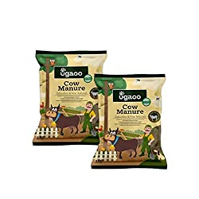
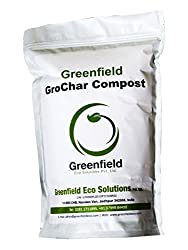
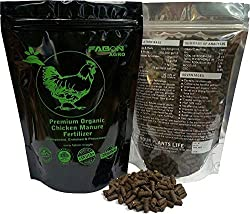
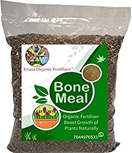

Basic Types of Organic Fertilizers:

1. Manure
It is made from animal excreta(cow dung & goat droppings). Cattle Manure is a good source of nitrogen and organic carbon while goat manure is rich in nitrogen and potash.
........
2. Compost
It is organic matter decomposed through composting. The organic matter used here can be vegetable and plant waste, animal excreta.

3.Chicken Litter
It consists of chicken manure and sawdust. It has high levels of nitrogen and potash. Consider superior for conditioning of soil for harvest than chemical fertilizers

4. Bone Meal
It is a mix of ground slaughter house waste products like animal bones. It is a very good source of phosphorous and amino acids. Being organic it is also a slow release fertilizer..

5.Vermicompost
It is a product of organic material degradation using various species of worms, to create a heterogeneous mixture of decomposing food waste.